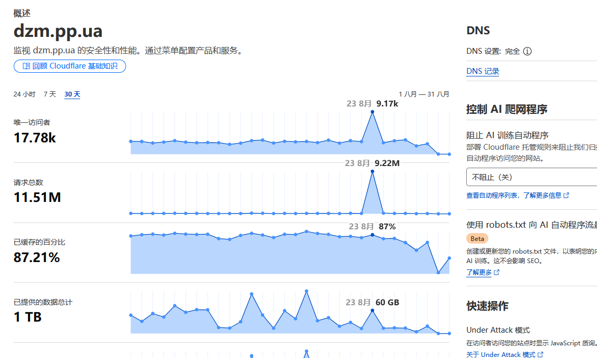
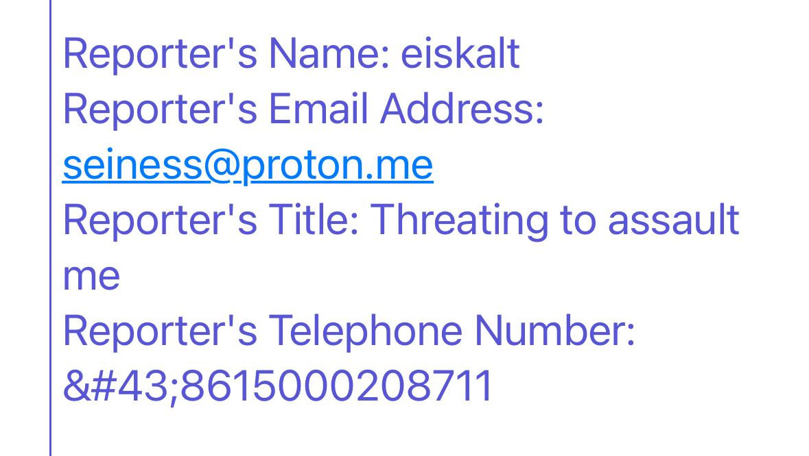

本站至今为止，由于担心影响加入开往项目的资格，一直没有谈论过技术以外的话题，就比如键政和挂人之类的。
但是，既然此事已严重影响到了本站及一切相关子域名的维护，以及高并发、高性能和高可用性，那么也不必藏着掖着，打掉牙往肚里咽了。
上次更新到现在，我已进行了多次魔改，还有一些bug修复，准备分享，但是总有股黑暗势力在捣乱
首先，我不在开头说凶手的名字和个人信息，不然有人会借此大作文章对本站进行举报。
我开长毛象实例的理由，并且相比于同一批难民，快一年也没跑路，每次技术博客（不得不承认，我这真的就是外行人写的技术博客）都必定打上这种tag，原因懂的都懂，无非就是DEI，从长毛象寻过来的都知道。而且因为与本次事件无关，所以今天也不说了。
我先从技术的角度来切入此事，之前我写过几篇文章，以后还会出保姆级教程。就比如说，将将存储桶隐藏在CDN背后，用Cloudflare隐藏自己站点。这防的是什么？
防的就是DDOS。我写这篇博文，不是来教技术的，所以不深入科普DDOS的原理和危害了。给大家看看后果
DDOS攻击

没被DDOS攻击过的站长们可以看看，这就是典型的被DDOS了的现象。
第一次遭遇时，我当时正在调试我魔改的代码，还以为是出BUG了。看了CloudFlare仪表板，发现我站多了很多客人，为什么我站就变得那么吸引人了呢？仔细看请求，发现这些请求所期望的返回值完全毫无意义，但是非常消耗服务器的计算资源。如果你硬要帮某人辩护的话，我请问了，谁家好人一天到晚，搜索空格作为关键词，还反复观摩我当时根本没开放注册的关于页面和登录页面？
而且这些访问大多数来自TOR节点，跟笨蛋冰当时所报告的情形一致，基本确定了是谁干的。
这就彻底排除了没被DDOS的合理怀疑。
社工攻击
人肉开盒与滥用公告板
刘某被人在公告板上开盒的截图我就不放了，遵守法律，保护被害人。我记得当时也根本没人管，因为这是一个去中心化的法外之地（其实也不完全去中心化，还是有很多站长在那帮坏人拉偏架的，毕竟被害人是个国男😅至于那些自己明明是个男的，却还要维护自己永生永世得不到的女权，本文就不多评价了）。然后一些小仙女骂刘某是个“肥猪男”，肯定是干了什么坏事，所以才被人开盒没人管😅（还是被我们的伟大祖国保护得太好了，翻墙出来找屎吃，还忘不了知心大姐姐那套逻辑）。后来道歉了，xxn的嘟文我刚搜了一下，也删了你不道歉也没事嘛，又没人查得到，关键是晶哥也懒得查。
就在刚才，它又出现了
恶意举报，套取实名信息
光是人肉搜索还不够，它的目的是要我永远闭嘴。
于是就给Contabo和nic.ua寄了举报信。

本来我还担心遭到攻击，现在我可以写一篇搭建长毛象保姆级教程了，里面包含如何注册域名，白嫖飞书邮箱（昨晚发现有邮箱地址被吞的风险，找resender也可以，亚马逊是最好的，但是审核严格。实在不行我再研究一下自己搭建邮箱，实例每月预算+$10.00）
最后，我的VPS暂且放过我了，域名寄了😭。好就好在我找到了减小损失的方法，这个放在下一篇博客讲。
今后，我要勤于备份实例数据库，以及letsencrypt证书。
神必代码开源
最后又到了大家最喜欢的神必代码开源环节了🤭
对于代码开源，我只是站在众多大佬的肩膀上。信创的开源项目众多，王畅睿早已成为了这个社区人人喊打的过街老鼠。再怎么不跟未成年计较（更何况被害人里面也有未成年），你王若明和刘娟不会教孩子，我们替你教育教育
对于此事，我对出生不予评价。我要说的，就是男子汉出来混，就得立得住威信，你怂了，这些妖魔鬼怪就强了。
之前我爸出门，他一个70岁的退伍军人，被一个小孩拿玩具枪追着打😅。他说：“你这大人怎么教育孩子的？”然后带孩子的大人装死听不见。因为曾经是人民子弟兵，所以也不跟小孩子计较。想当年李洪志大师二十几岁时，直接一jio干飞邻居家的孩子
都到墙外了，都是什么人才会翻墙的，大家心里都清楚，真没人惯着你